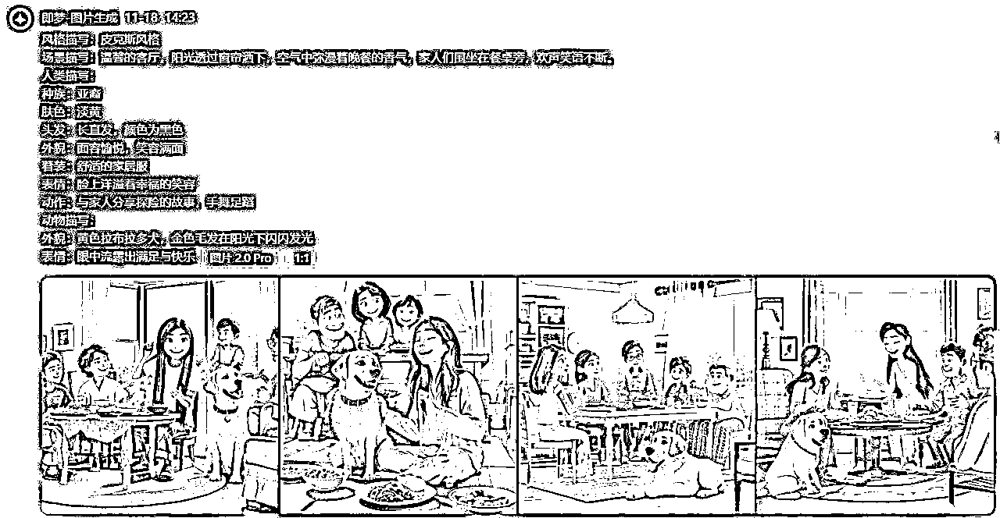

来源：https://tcrmlmkdwh.feishu.cn/docx/GJYqdZQUDoSkNIxkj1Qc2OJsnxb
大家好，我是浮笙~ （加个颜色，容易看到我😁）
灯光~
天空一声巨响，浮笙闪亮登场！
惊喜登场~
😂好了好了，不闹了哈~
各位看官，准备好板凳，好戏即将开始~
10月底的时候，亦仁发布了第二个超级标——Youtube和shorts。
收到指令以后，马上开始行动🤑...
时间来到10天后...
💢还没开始...
额，不管怎么说，现在开始了哈，我保证，下面绝对是“正经”文章🙈
这篇文章既是实操复盘，也是经验交流，同时更是给还没入局或者即将入局，亦或者纠结的小伙伴们一个真实的数据做参考和衡量。
我将会逐个把下列问题完整的进行一遍场景重现和问题处理。
1.项目使用工具
2.项目完整实操流程
3.成果展示
4.遇到的问题和处理方法
5.个人经验技巧
每个功能的工具都有很多，选其中一个就够了。主要是自己用哪个顺手，效果更好。
本文我以【 GTP】 +【 MJ / 即梦AI 】+【 可灵AI】 为例
这是我个人认为在本功能下比较好用的，后面我会在实操中分析优缺点。
这里如果你有对标账号，可以去拆解对标账号的视频，提炼文案内容，然后修改。我比较懒，直接扔给GPT来让它发给我生成一篇新的文案。
额，更懒的是，我还让GPT顺便做了分镜设计🤐
这里就不在把每个工具都说一遍了，浪费时间，主要也是太简单了，我把提示词贴出来，直接粘贴进去就出文案。
我先给大家看结果哈：
stop... （差不多得了，不然要说我水文了~ 😂）
其实我是生成了10个分镜头的...
你是一名优秀的短视频编导，你要根据我给的提示进行一段短视频的内容创作，先根据提示生成一段内容文案，然后将内容整理成多个镜头脚本，需要清晰的描述出如何拍摄哪个画面，标注出运镜镜头，故事中的角色必须给与一致性的设计，包括穿着的不同凸显特色。必须按照我给出的格式输出。
分镜头: 分镜头名称
我用了豆包和KIMI与GPT进行对比，在文案创作方面，个人感觉GPT的情节和理解可能不够符合国人的风格，在这方面豆包略胜一筹，也仅仅是一丢丢。
什么？kimi? 嘎嘎嘎，在它生成第一个分镜头的时候，我就忍不住笑了。人物的特点描写它居然给我来个”不限“ 。。。
当时我都凌乱了~
我贴上来给你们笑一笑：
有人肯定好奇了，我把文案搞成这样，做图的时候怎么办？
这个也正是我接下来要说的，同样的分镜头，我把它们作为提示词来用，这样就省了制图时在去一步一步试错，当然，这其实是我已经是错过后总结出来的格式，拿走不谢~
举个例子：
测试咒语：
中文：
风格描写：皮克斯风格
场景描写：温馨的客厅，阳光透过窗帘洒下，空气中弥漫着晚餐的香气，家人们围坐在餐桌旁，欢声笑语不断。
人类描写：
种族：亚裔
肤色：淡黄
头发：长直发，颜色为黑色
外貌：面容愉悦，笑容满面
着装：舒适的家居服
表情：脸上洋溢着幸福的笑容
动作：与家人分享探险的故事，手舞足蹈
动物描写：
外貌：黄色拉布拉多犬，金色毛发在阳光下闪闪发光
表情：眼中流露出满足与快乐
英文：
Style description: Pixar style
Scene description: In the warm living room, the sun shines through the curtains, and the air is filled with the aroma of dinner. The family is sitting around the dining table, laughing and laughing.
Human description:
Ethnicity: Asian
Skin color: light yellow
Hair: long straight hair, color black
Appearance: Cheerful face, smiling
Attire: Comfortable loungewear
Expression: A happy smile on the face
Action: Share adventure stories and dance with your family
Animal description:
Appearance: Yellow Labrador Retriever, golden hair shining in the sun
Expression: Eyes showing satisfaction and happiness
Action: Sit next to your family, listen to the story quietly, and occasionally rub your head against them to show intimacy
GTP - 【dall-e-3】
即梦AI

Midjourney
作图这个没什么难的，几乎等于傻瓜式操作，现在的国产AI门槛都低的底裤都没了，况且提示词框架格式我上面也都给出来了，复制粘贴替换就OK呢，就别在说不会了好吧~~😮💨
其实我都不大想写这一章节，实在是因为太简单了，但是又怕真有白的不能在白的小白不会，干脆就码点字吧，剧情继续。。。
对了，提示词微调方面我就不说了哈，那种科普文章太多了，自行去AI搜索哈~
打开nextchat，按照图示进行设置，即可开启制图模式，设置好以后，直接把提示词输入进去按回车就坐等出图。
这里需要重点说下，由于是用GTP出图，所以中文肯定不行，它不明白你说的是什么，所以会“自由发挥”🥵~
😶🌫️额，它这个“自由”，那可是相当的风马牛不相及的自由。。。
所以，用任何国外的AI时候，一定要先翻译成英文，而且翻译工具最好是谷歌或者微软，🤠个人感觉，这些用到的国外AI软件，使用微软翻译会更好一些💓。
我用的是“沉浸式翻译”，也是圈友推荐的，至于是航海家群里哪位大佬不记得了，时间久远，我直接把URL贴上，需要的自己去安装吧。
沉浸式翻译（点击打开网页，自行安装）
小提示：由于是实时联网翻译，所以只保留1~2个自己喜欢的翻译引擎就好，其它的都关闭掉，能够增加反应速度。我个人是只保留了谷歌和微软，有时候会小小的对比一下。
🫠欲看此图，往上扒拉~
🤬￥*@#%@（@！￥%%@￥#&*（此处省略3000字）
🤬￥*@#%@（@！￥%%@￥#&*（此处省略3000字）
这种软件使用教程是真心没必要出现在复盘贴上，会跑题的~
（给自己的懒找了一个牛逼且看似合理的借口😈）
🤬￥*@#%@（@！￥%%@￥#&*（此处省略1000字）
答：提前给AI投喂一些故事或者用对话对它进行优化。
答：如果是MJ或者GPT出图，那么在翻译的时候优先使用谷歌翻译引擎，其它翻译引擎会有理解上的差距。如果是国产AI，那多一半是因为提示词给出的不够精准，需要在更多的细节和维度给与优化。
答：GPT=豆包＞kimi
答：提示词理解能力 GPT＞即梦AI＞Midjourney
精细化出图排序 Midjourney＞即梦AI＞GPT
低成本出图排序 即梦AI＞GPT＞Midjourney
（仅供参考，不喜勿喷，喷也没用，主打任性😤）
答：有。下载个指纹浏览器，一般免费版都可以开10个窗口，然后发动亲戚朋友借用手机号多注册几个账号，利用每天赠送的积分就足够用了。AI视频同样可以薅羊毛，前提是必须有网页版。目前即梦、可灵、海螺理论上都可以这么薅。
答：解决不了~💢
那是瞎说😁
在短视频创作的时候，尤其是各种AI工具给出的分镜头中，最重要的莫过于角色的一致性构建。你不能在欣赏一个短视频的时候一共看了没十几秒或者几十秒钟，故事主人公换好几个啊 是吧？！那么接下来我结合自己的经验技巧，给你们2个方案，
我们打开B族Midjourney提示词生成器，下面下滑，找到【命令区】，这里有一个【角色一致性】的图片按钮。把你想固定的人物或者动物角色图片提交上去，记得，务必要点击【提交】按钮，然后在点击【角色一致性】文字按钮。
操作顺序我已经在图片上标注了。
tips：输入关键词以后，直接按回车就会自动翻译成英文，上面的提示词区才会立即更新
点击【复制COPY】按钮的时候，屏幕中间出现弹窗才算复制成功
在选择风格类提示词的时候，左上角会出现【改权重】，根据情况调整，可改变出图风格，有时候效果会出奇的好，需要多调试。
目前国内AI应该只有即梦AI具备角色一致性构建功能吧。但是一般人可能不知道，因为它隐藏的比较深。按照我图示的地方点击。
这里才是真正的创建固定角色的地方！ 怎样，藏得够深吧！
生成角色=文生图
导入角色=可以直接用（白底、正面视图）
弄好以后，必须点击右上角【保存角色】
至此，你就有了一个故事的固定角色的，后面分镜头直接用，不用在去担心角色一致性问题了。多个角色的故事就去创建多个角色。
每个分镜对应一个故事情节，必须先【创建空白分镜】，然后才能进行文生图/图生图和参数的设定；
❇️tips:当你出图的时候如果发现角色变了？不一样了？嗯，那肯定是你忘记添加【出演角色】了。
答：GTP - 【dall-e-3】≈ 不知道
即梦AI ≈ 0.03元/抽 （69元/月会员 ➗ 约2080张）
Midjourney ≈ 不知道
答：海螺AI＞可灵AI＞即梦AI
答：海螺AI ≈ 2元/分镜/抽（每日赠送积分不计算在内）
可灵AI ≈ 3.1元/分镜/抽（每日赠送积分不计算在内）
即梦AI ≈ 2.7元/分镜/抽（每日赠送积分不计算在内）
谢幕~